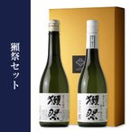

獺祭セット（日本酒/純米大吟醸/旭酒造/ギフ
旭酒造の日本酒「獺祭」の純米大吟醸50、純米大吟醸 磨き三割九分のセットです。 獺祭 純米大吟醸50はシリーズの中で一番スタンダードなお酒ながら、高額大吟醸に負けない高い完成度を誇ります。ふわりと感じる控えめで優しい吟醸香と柔らかい口当たり。 獺祭 純米大吟醸 磨き三割九分は純米大吟醸50よりさらに高精米のお酒。華やかな上立ち香と口に含んだときに見せる蜂蜜のような綺麗な甘み。飲み込んだ後も長い余韻が続きます。 ■セット内容：獺祭 純米大吟醸50 720ml×1本 獺祭 純米大吟醸 磨き三割九分 720ml×1本 化粧箱 720ml 2本用 ■蔵元：旭酒造（山口県） ■化粧箱：あり ■保管方法：直射日光を避け、冷暗所保存 ■配送方法：常温便（夏季クール便推奨） ■3セットまで1個口で発送可能です。4セット以上は複数口の送料が必要となります。
このお酒を飲む人はのやつ
 もどる
もどる